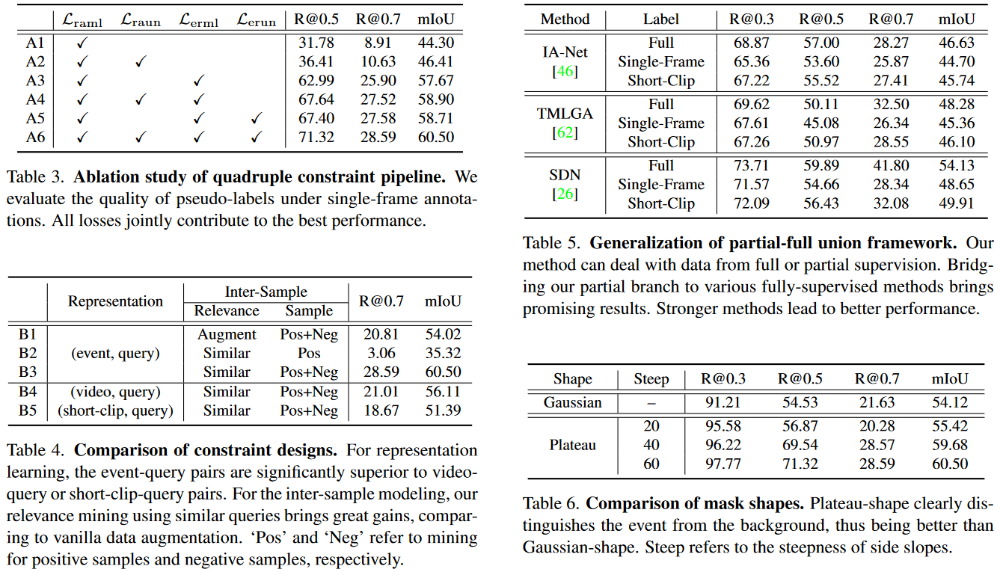
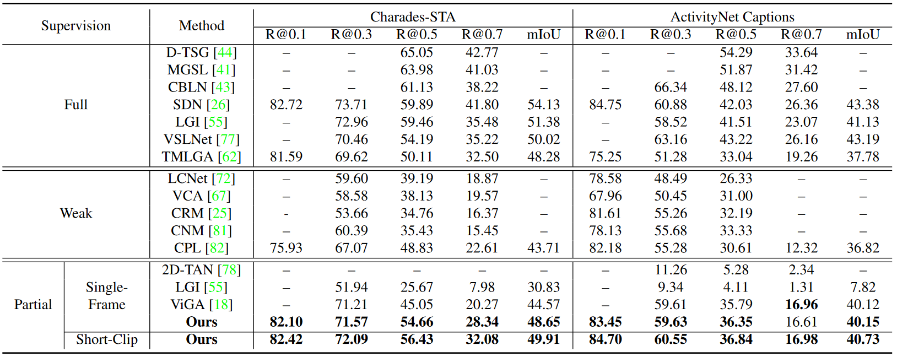

Performance vs. Annotation Costs. For temporal sentence grounding, full supervision achieves good performance, but requires expensive annotation; weak supervision significantly alleviates annotation costs, but shows poor performance. To achieve great empirical performance and maintain cheap annotation overhead at the same time, we introduce the intermediate setting: partial supervision, including short-clip or even single-frame labels.
| Temporal sentence grounding aims to detect the event timestamps described by the natural language query from given untrimmed videos. The existing fully-supervised setting achieves great performance but requires expensive annotation costs; while the weakly-supervised setting adopts cheap labels but performs poorly. To pursue high performance with less annotation cost, this paper introduces an intermediate partially-supervised setting, i.e., only short-clip or even single-frame labels are available during training. To take full advantage of partial labels, we propose a novel quadruple constraint pipeline to comprehensively shape event-query aligned representations, covering intra- and inter-samples, uni- and multi-modalities. The former raises intra-cluster compactness and inter-cluster separability; while the latter enables event-background separation and event-query gather. To achieve more powerful performance with explicit grounding optimization, we further introduce a partial-full union framework, i.e., bridging with an additional fully-supervised branch, to enjoy its impressive grounding bonus, and be robust to partial annotations. Extensive experiments and ablations on Charades-STA and ActivityNet Captions demonstrate the significance of partial supervision and our superior performance. |
Framework Overview

Given partial labels, we use one partially-supervised branch to facilitate high-quality alignment of event-query representations, i.e., interact bi-modal features, adopt an event detector to calculate event visual features and background features, finally optimize with the constraint loss and partial grounding loss. Bridging by grounding pseudo-labels, we further unite the partially-supervised branch with a powerful fully-supervised branch, to enjoy the grounding bonus from fully-supervised research lines.
Ablation Studies

Quadruple Constraint Pipeline
We make full use of partial labels to align event-query representations with high quality. For intra-sample, $L_{raml}$ raises event-query gather, $L_{raun}$ enables event-background separation. For inter-sample, $L_{erml}$ and $L_{erun}$ urge intra-cluster compactness and inter-cluster separation.
Comparison with SOTA Methods

Using single-frame labels, our method outperforms most competitors by a large margin. The performance can be further improved with short-clip labels (2 seconds), and even comparable to several earlier fully-supervised methods.
Effectiveness of Partial Annotations.
Weak refers to not using the partial grounding loss $L_{grnd}$. For single-frame or short-clip labels from various types of labeling distributions, our framework demonstrates strong robustness and superiority.
Qualitative Grounding Results
Using partial labels as seed anchors, our method obtains great pseudo-labels from the partially-supervised branch. Short-clip labels further improve single-frame results.
T-SNE Representation
Left refers to original video features from pre-trained extractors. Right refers to video features with quadruple constraint pipeline. Colors indicate different clusters.
Acknowledgements
This research is supported by the National Key R&D Program of China (No. 2022ZD0160702), STCSM (No. 22511106101, No. 18DZ2270700, No. 21DZ1100100), 111 plan (No. BP0719010), and State Key Laboratory of UHD Video and Audio Production and Presentation.